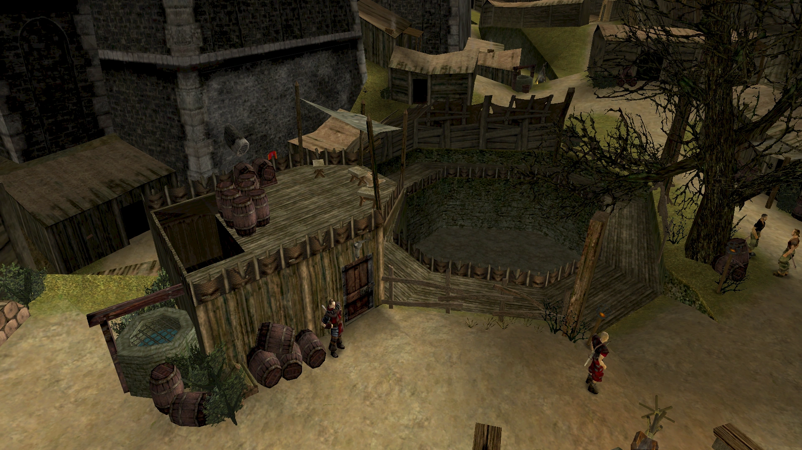
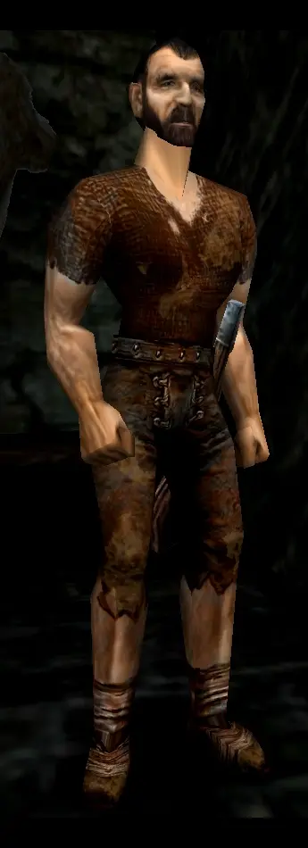
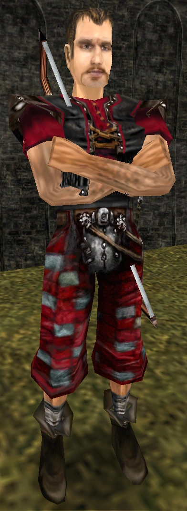
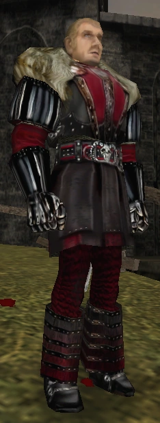
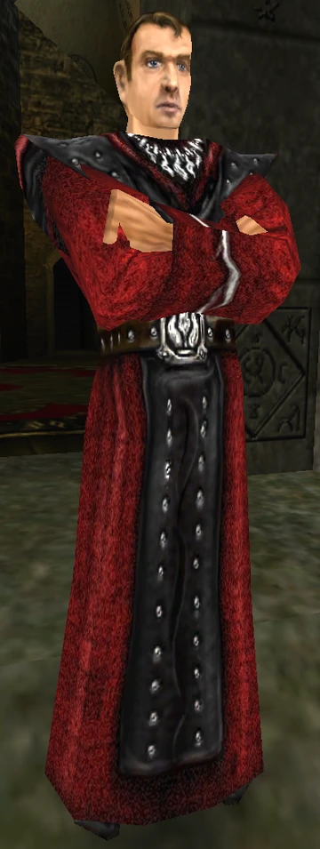
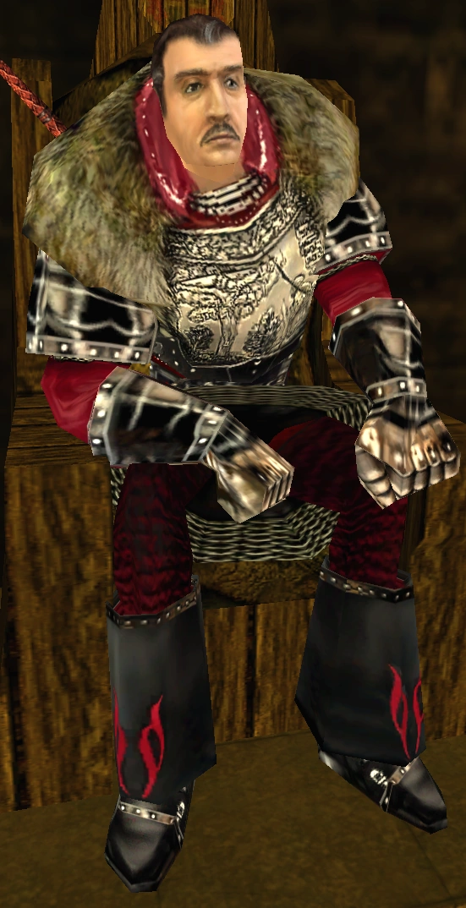

Historia obozu
„To największy i najpotężniejszy z trzech obozów. Gomez i jego ludzie kontrolują kopalnię,
a tym samym – cały handel ze światem zewnętrznym. Raz w miesiącu król przysyła nam wszystko,
czego potrzebujemy. Mamy staruszka w garści, kapujesz? Przysyła nam broń, chleb, mięso… wszystko.
Ty też możesz mieć w tym udział. Musisz tylko dołączyć do ludzi Gomeza."
- Diego, cień i trener ze Starego Obozu.
Kasty - kim możesz zostać

Kopacz

Cień

Magnat

Mag ognia

Przywodca - Gomez